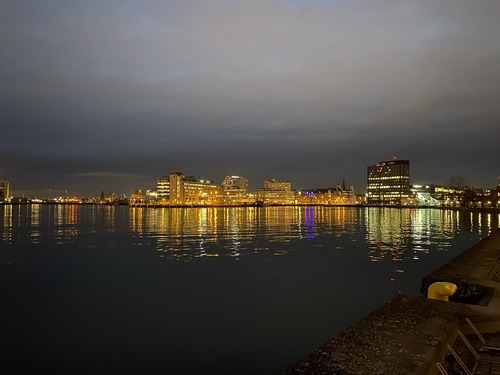

Egyik kedvenc hobbim az utazás. Szeretek utazni, mert az utazás számomra nem csupán kikapcsolódást jelent, hanem egyfajta felfedezést is. Imádom felfedezni új helyeket, belemerülni más kultúrákba, és megismerni olyan embereket, akik más életstílusban élnek. Az új tájak, az ismeretlen utak és az épített környezetek mind inspirálnak és gazdagítanak. Jártam már Egyiptomban, Olaszországban, Dániában, Norvégiában, Svédországban, és még sok más helyen.
Osloban 2022 novemberében jártam kollegáimmal. A város lenyűgözően egyesíti a modern városi életet és a természeti szépségeket. Az építészeti csodák, mint például az Operaház (a tetején készült a kép), egyedülállóan elegáns megjelenést kölcsönöznek az oslói tengerpartnak. A városi területek mellett a zöld parkok és erdős területek is szépen illeszkednek a városképbe.


2023 elején jártam Koppenhágában, illetve Malmöben. Koppenhága, Dánia fővárosa, egy lenyűgöző és vibráló város, amely ötvözi a történelmi báját és a modern életstílust. A várost gyakran emlegetik a boldogság és életminőség fellegváraként, és ez nem véletlen.
Malmö Svédország harmadik legnagyobb városa, amelyet az Øresundi híddal összekötött Koppenhágával, Dánia fővárosával. Malmö egy modern és sokszínű város, amelyben a hagyományos skandináv báj találkozik a kortárs életstílussal.
Rómát 2021 nyarán volt szerencsém meglátogatni barátaimmal. A képen a Panteon látható. A Panteon Róma egyik leghíresebb építészeti csodája, amely az örökkévalóság és a római mérnöki kiválóság szimbólumaként emelkedik ki. Az eredeti Panteon Kr. u. 27-ben épült Augustus idején, majd később Hadrianus császár által 125-ben újraépítették.